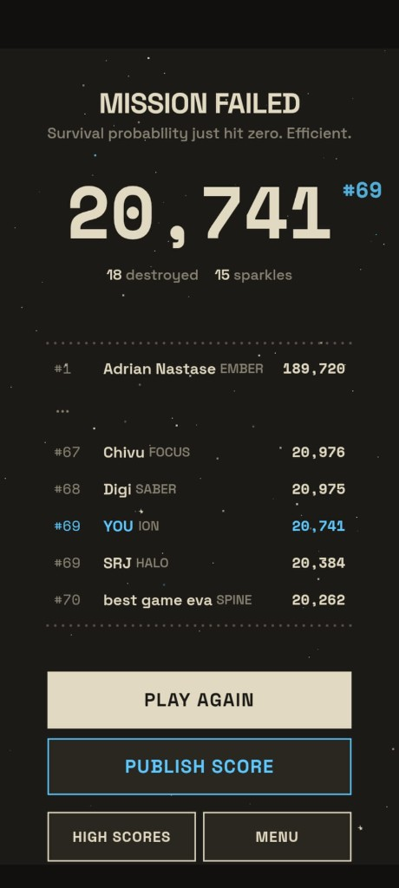

swooshtober
Win $50 for ranking #1 on the Space Board
Play Open Space with Zigzag and submit your distance under your call sign. The longest one sent from 15 through 31 October 2026 takes #1.
- #1 $50 sent via Revolut or similar
- #2 Unlock any 2 ships for free
- #3 Unlock any ship for free.
Open now. Send your score by 31 October 2026 at 23:59, Bucharest time.
Distance
Loading the live board…
How it works
Play Space Swoosh in Open Space, and go as far as you can. The distance shows up when you die. It is not on the Space Board until you publish it.

Anyone can play, from anywhere. I don’t need a video of the run. If you’re ahead, tag me and tell me your call sign. I look the score up before I send the $50 or unlock any ships.
- Play Open Space and go as far as you can.
- When you die, tap Publish Score. That logs the distance on the Space Board.
- Play again if you want. Publish each run you want counted. I keep the best distance you published on those dates.
- Open Space Board and stay on Distance. Only scores published inside the dates count.
- If you’re ahead, tag me and say your call sign.
Tag me here and say your call sign. Instagram @spaceswoosh_app · YouTube @playspaceswoosh · TikTok @spaceswoosh.app · X @playspaceswoosh
Where to play Space Swoosh
What counts
Three things, all of them. You played Open Space. You steered with Zigzag. You tapped Publish Score, so the distance is actually on the Space Board.
Arc scores don’t count. Obstacle scores don’t count. Journey progress doesn’t count. A score sent before 15 October 2026 at 00:00, or after 31 October 2026 at 23:59, Bucharest time, doesn’t count either. That includes a big one already stuck on the board from before.
Fly any ship you already have. Buying another one doesn’t move you up.
Prizes
#1 gets $50, sent by Revolut or a similar transfer. #2 tells me any 2 ships to unlock, free. #3 tells me any 1 ship to unlock, free. I check the top score before I pay or unlock anything. The result goes up on 1 November 2026.
Questions
Does it cost anything?
No. You don’t pay to enter. A ship you bought doesn’t help you place. The free ships are the prize for #2 and #3, after I check the scores.
Which mode and score count?
Open Space, steered with Zigzag. I look at distance, the number on the Distance tab of the Space Board. Arc runs, obstacle scores, and Journey days don’t count.
Can I try more than once?
Yes. Fly as many as you want. Tap Publish Score on each run you want counted. I keep the highest Zigzag distance you published from 15 through 31 October 2026.
Do old scores count?
No. If it was submitted before 15 October 2026 at 00:00, or after 31 October 2026 at 23:59, Bucharest time, it doesn’t count. That includes scores already sitting on the board.
Can I use different ships?
Yes. Any ship you can already fly. Which one you pick doesn’t change who wins.
Who can take part?
Anyone, from anywhere.
What happens in a tie?
Same distance: the score that reached my server first wins. I use the time the server recorded, not who says they finished first.
How do I know where I stand?
Open Space Board in the game and stay on Distance. Your row is the distance you submitted. For the $50 I only count rows submitted from 15 October through 31 October, Bucharest time. An older score above you doesn’t take the prize.
How will you check the winner?
I look up the longest Zigzag distance that was actually submitted inside those dates. You don’t need to record the run. Bots, modified clients, made-up scores, and automated capture runs are out. If the person in front doesn’t check out, I look at the next score the same way.
How does the winner get the prize?
Tag me and say your call sign. If the score checks out, I send #1 $50 by Revolut or something similar. #2 and #3 tell me which ships to unlock. I announce it on 1 November 2026.
Rules
- #1 gets $50, sent by Revolut or a similar transfer.
- #2 unlocks any 2 ships for free.
- #3 unlocks any 1 ship for free.
- Starts 15 October 2026 at 00:00, Bucharest time.
- Ends 31 October 2026 at 23:59, Bucharest time. That last minute still counts.
- A score submitted from 1 November 2026 at 00:00, Bucharest time, does not count.
- Anyone can play, from anywhere.
- Play Open Space.
- Steer with Zigzag. Arc does not count.
- The number that counts is distance. Obstacle scores do not count. Journey does not count.
- You have to tap Publish Score during those dates. A run you never publish does not count.
- Scores already on the board from before 15 October do not count.
- Play as much as you want. Your best distance from those dates counts.
- Any ship you can already fly is fine.
- Space Board in the game, on the Distance tab, is the list. I still only count scores sent during the dates above.
- I don’t need a recording of your run.
- If two distances match, the one the server received first wins.
- Play it yourself. Bots, modified clients, fake scores, and automated capture runs don’t count.
- I check the leading score before I pay anyone or unlock ships.
- If that score doesn’t hold up, I check the next one the same way.
- I announce the result on 1 November 2026.